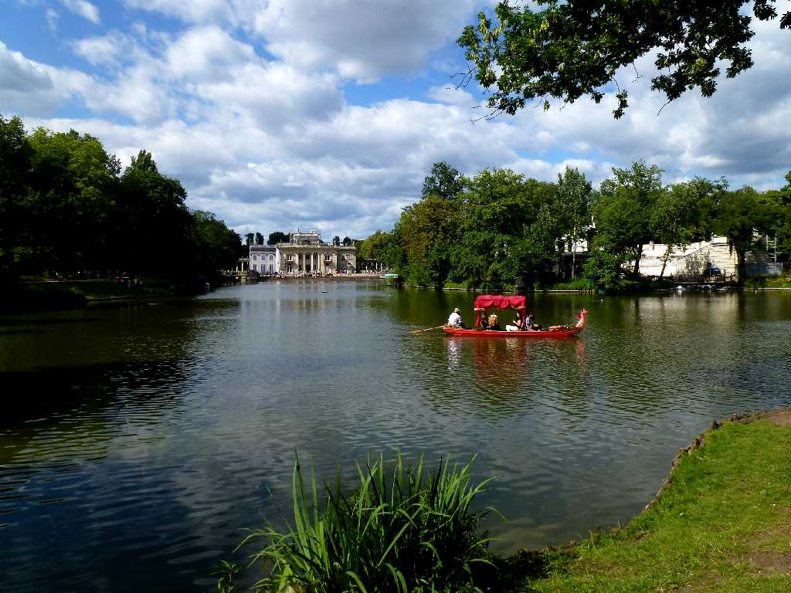
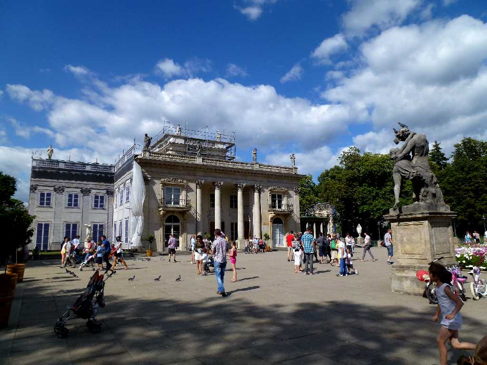
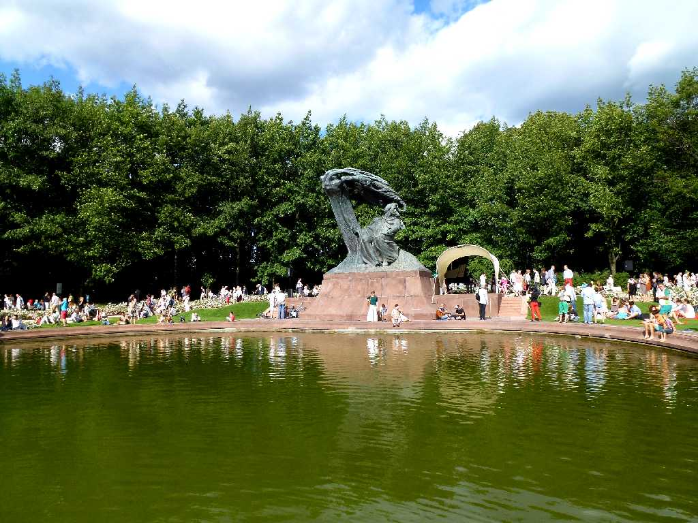
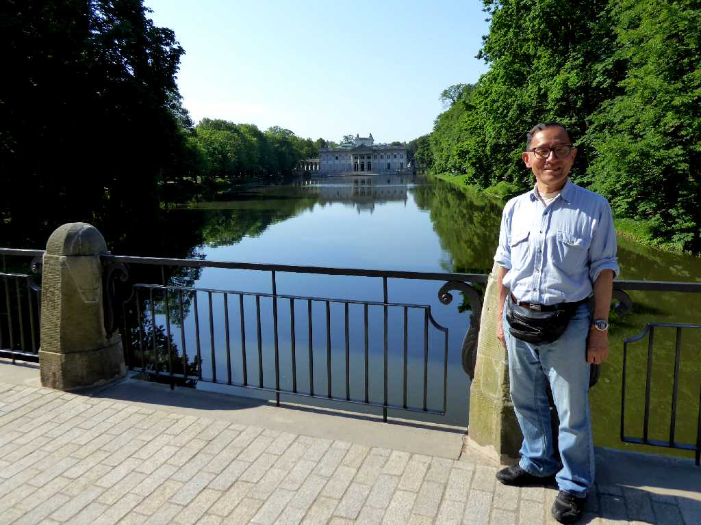

Pałac na Wyspie Łazienki Królewskie
８０日間世界一周鉄道の旅２８日目１６世紀に女帝スフォルツァによりイタリア様式で創られ１７世紀にバロック様式に作り替えられたワジェンキ公園

Pałac na Wyspie
水上宮殿と云われる１７世紀に創られたバロック様式の水に浮かぶようなワジェンキ宮殿

Łazienki Królewskie
日曜日の午後にショパンの無料野外コンサートが聴けた

June 5 2019 Pałac na Wyspie Łazienki Królewskie
ポーランド周遊３,５００㎞バスの旅で６年ぷりの再訪問